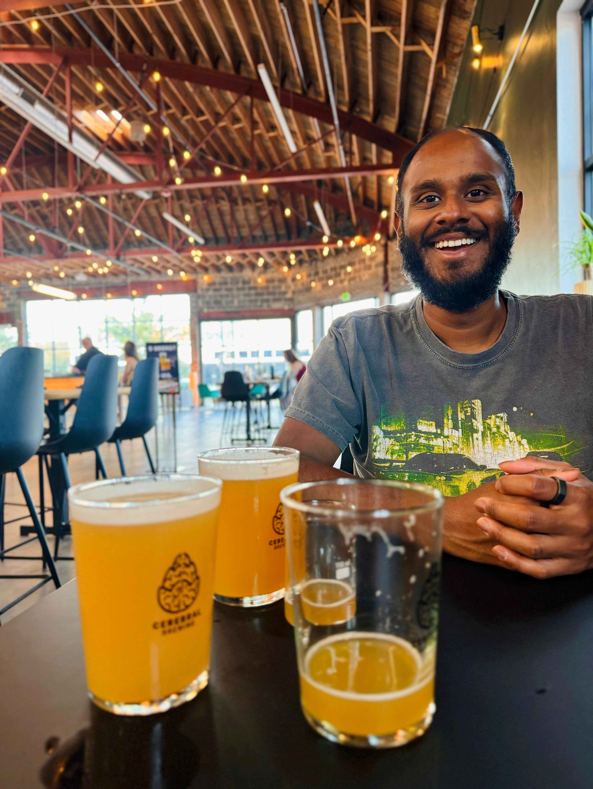

📊 Data Scientist
Data Science Manager at Deloitte
About
Applied data scientist with 8 years of experience architecting AI/ML solutions, leading high-performing teams, and delivering production systems that solve complex business problems. I specialize in fraud detection — designing end-to-end ML pipelines, guiding cross-functional Agile teams, and bridging technical rigor with business strategy to ship solutions that matter in high-stakes, mission-critical settings.
Outside of work, I'm into traveling, hiking, soccer, basketball, and the occasional deep dive into a good show or book. My wife and I have also recently taken up gardening and home maintenance — turns out it's just a series of YouTube tutorials and optimistic trips to Home Depot together.
Side Projects